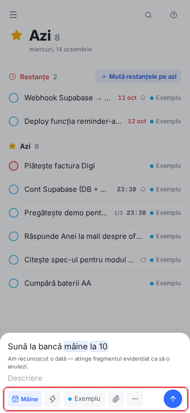
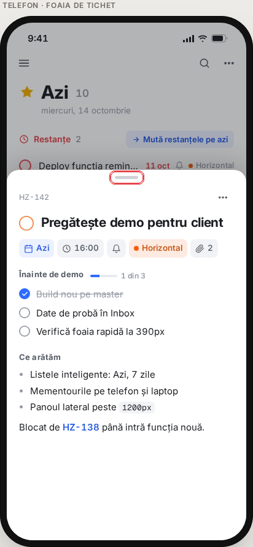
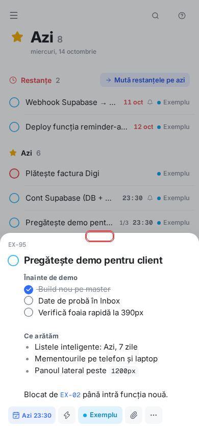
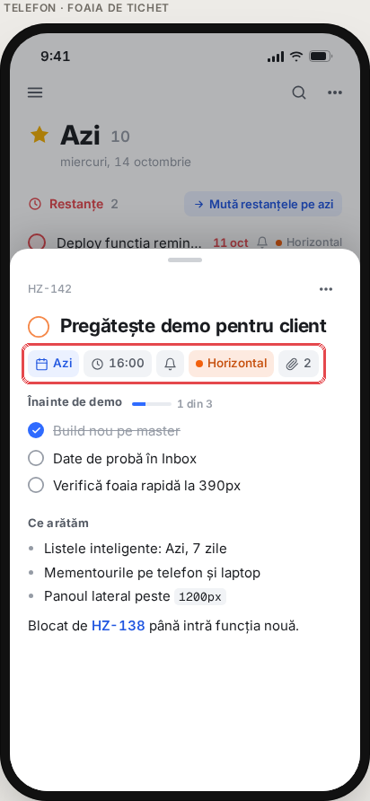
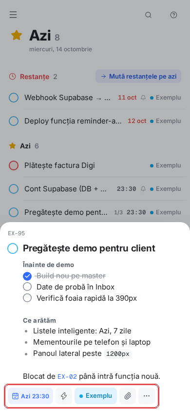
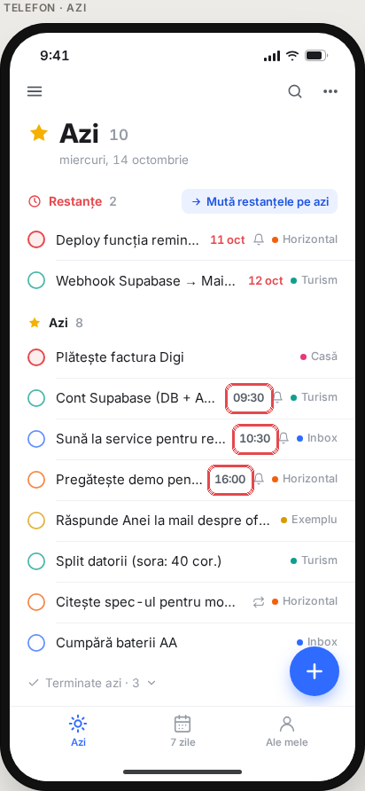
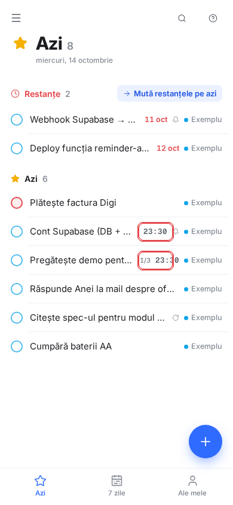
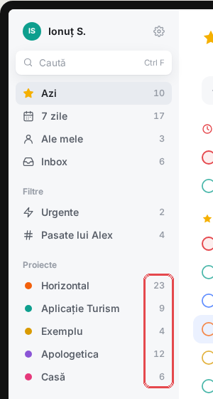
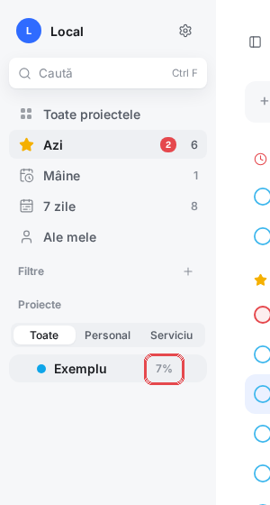

Punctul 2, lămurit: sunt DOUĂ ferestre diferite
Pe telefon, de jos urcă două ferestre care seamănă, dar fac lucruri diferite:
A. Fereastra de sarcină — apare când atingi o sarcină care există deja în listă. O deschizi ca s-o citești sau s-o modifici.
B. Fereastra de adăugare — apare când apeși butonul albastru +. O deschizi ca să scrii o sarcină nouă.
Acum, în amândouă, rândul de butoane (data, proiectul, agrafa) e jos (încercuit). Propunerea mea: în A îl mut sus, sub titlu (acolo citești — vezi data imediat, chiar și la o descriere lungă); în B rămâne jos (acolo scrii — întâi titlul, apoi alegi data, cu degetul lângă tastatură).


Unde aplicația nu e identică cu macheta
Patru locuri. În fiecare: stânga = macheta pe care ai aprobat-o, dreapta = aplicația acum. Zona despre care e vorba e încercuită cu roșu. Eticheta spune cine a decis abaterea.
1. Liniuța gri de deasupra ferestrei de sarcină (telefon)
Decizia mea, nu a designeruluiCând atingi o sarcină pe telefon, de jos urcă o fereastră. În machetă, sus pe ea e o liniuță gri scurtă. Pe telefoane, liniuța asta înseamnă de obicei „trage-mă în jos ca să mă închizi”. La noi fereastra nu se închide trăgând-o (se închide atingând zona întunecată de deasupra), așa că n-am pus-o. Se poate face și tragerea, dacă o vrei.


2. Rândul de butoane din fereastra de sarcină (telefon)
Decizia mea, nu a designeruluiButoanele „Azi 16:00”, proiectul, agrafa etc. stau în machetă imediat sub titlu. În aplicație au rămas jos, sub descriere — așa erau și înainte de redesign: când scrii, tastatura urcă și ele stau chiar deasupra ei. Le pot muta sub titlu ca în machetă.


3. Fontul orelor (și al ID-urilor ca „HZ-12”)
Recomandarea designerului — nu ta, am greșit când am zis că ai ales-o tuÎn machetă ora „09:30” e scrisă cu același font ca restul. În aplicație e scrisă cu un font de tip mașină de scris (cifrele au toate aceeași lățime). Designerul a recomandat asta când a propus varianta A, dar macheta însăși nu arată așa — de-aici confuzia. Pot trece orele pe fontul obișnuit, ca în machetă.


4. Numărul de lângă proiect (bara din stânga, laptop)
Decizia mea, nu a designeruluiÎn machetă, lângă fiecare proiect e câte sarcini deschise are („23”, „9”). În aplicație e cât la sută e terminat („7%”), cum era și înainte. Pot pune numărul de sarcini, ca în machetă.

